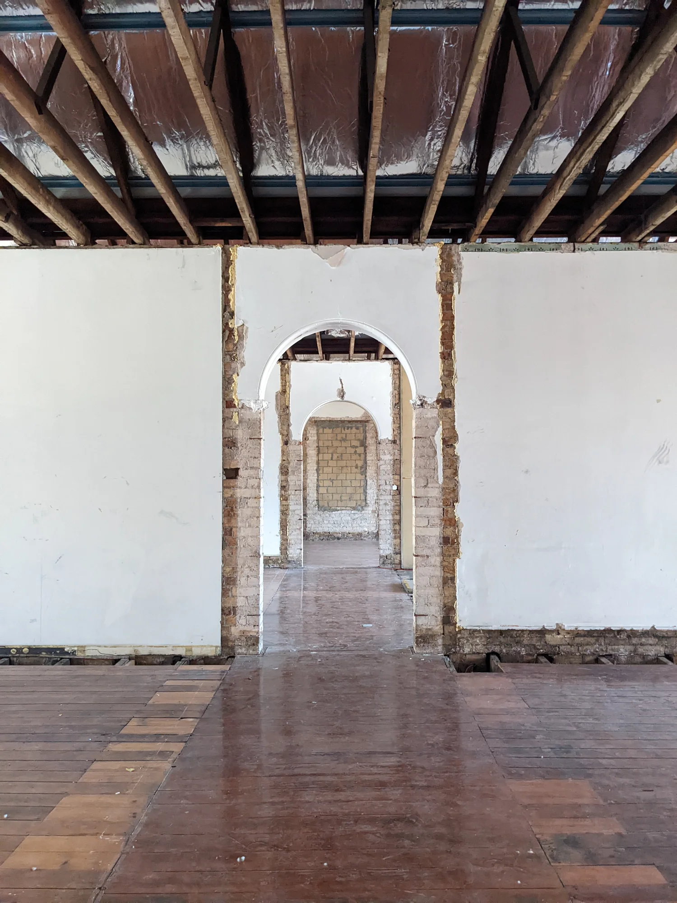
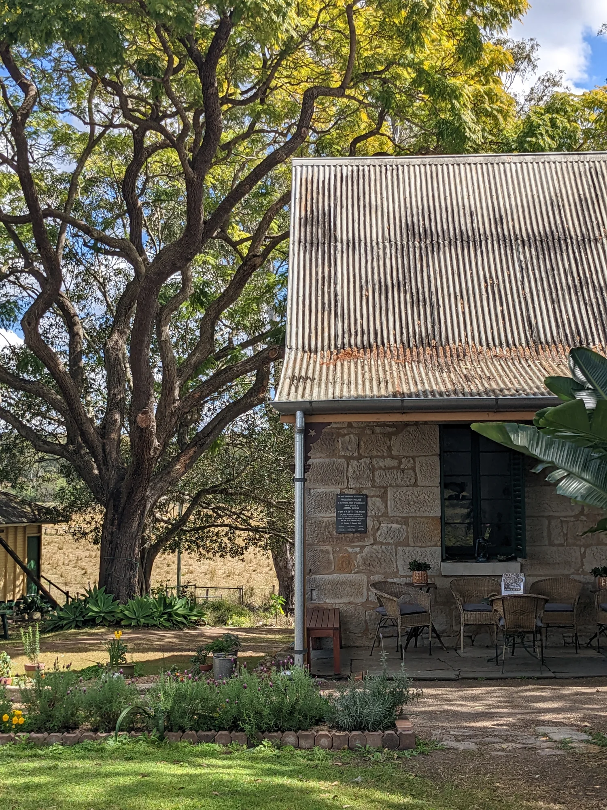
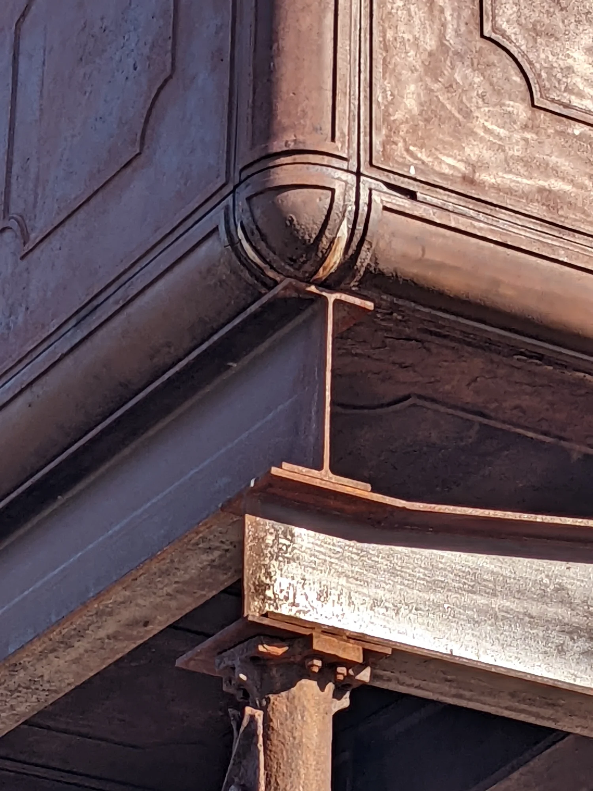
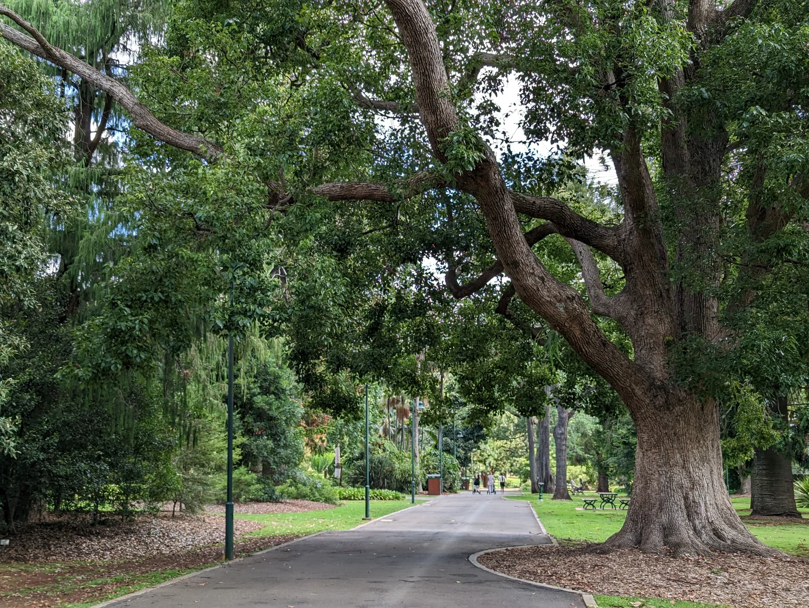

Heritage consultant · Brisbane, Queensland & Northern NSW
Understanding place. Guiding change.
We provide considered heritage advice for places in transition — helping owners, architects and project teams understand significance, navigate approvals and achieve thoughtful development outcomes.


Brisbane heritage consultancy
Heritage advice grounded in place.
Based in Brisbane, Orton Heritage works with owners, architects, planners and project teams across Queensland and Northern New South Wales.
We combine architectural understanding, historical research and clear planning advice to make heritage requirements easier to navigate — from early design thinking and Heritage Impact Statements through to approvals, documentation and conservation works.
About Orton HeritageHeritage services
Clear advice for complex places.
From Heritage Impact Statements and character advice to conservation planning, design input, digital recording and research, we help clients understand what matters and make informed decisions about change.
View all servicesWhat we do
Conservation and change are not opposites.
Good heritage outcomes come from understanding what matters, why it matters, and where change can occur without diminishing significance.
Our role is to make that understanding useful — for clients, design teams and decision-makers — so that heritage considerations become part of the project rather than an obstacle at the end.


Places and context
Buildings are only part of the story.
Setting, landscape, use, history and relationships between elements all contribute to how a place is understood.
We look beyond isolated fabric to consider the broader context of a place, helping projects respond to heritage values in a way that is practical, proportionate and clearly explained.
Start a conversation